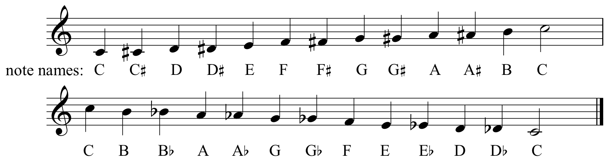

How to read and understand keysignatures
Below is a table that lists the proper amount of flats or sharps
It does not take into account enharmonic keys
| Key Signature Name | Number of Sharps or Flats | Notes for Scale | Example Song |
|---|---|---|---|
| C Major | No flats or sharps | C D E F G A B (C) | Let it Be - The Beatles |
| D-Flat major | Five Flats | Db Eb F Gb Ab Bb C (Db) | Take a Look at Me Now - Phil Collins |
| D Major | Two Sharps | D E F# G A B C# (D) | Everlong - Foo Fighters |
| E-Flat Major | Three Flats | Eb F G Ab Bb C D (Eb) | Bohemian Rhapsody - Queen |
| E Major | Four Sharps | E F# G# A B C# D# (E) | Cars - Just What I Needed |
| F Major | One Flat | F G A Bb C D E (F) | Somebody I Used To Know - Goyte |
| G-Flat Major | Six Flats | Gb Ab Bb Cb Db Eb F (Gb) | Dead Man's Party - Oingo Boingo |
| G Major | One Sharp | G A B C D E F# (G) | Metallica - Enter Sandman |
| A-Flat Major | Four Flats | Ab Bb C Db Eb F G (Ab) | Smells Like Teen Spirit - Nirvana |
| A Major | Three Sharps | A B C# D E F# G# (A) | Take On Me - Aha |
| B-Flat Major | Two Flats | Bb C D Eb F G A (Bb) | Purple Rain - Prince |
| B Major | Five Sharps | B C# D# E F# G# A# (B) | The Only Exception - Paramore |